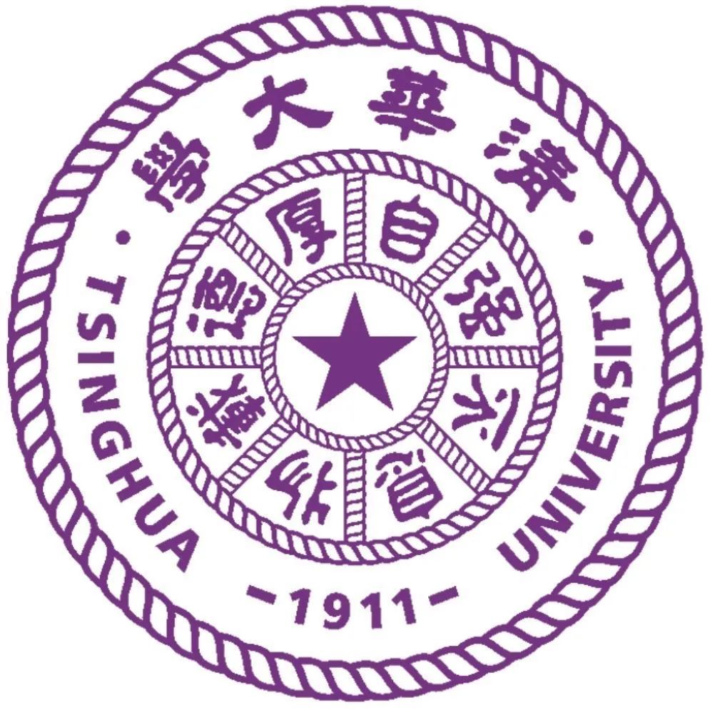

Ziyang Liu(刘子阳)

|
苏州大学未来科学与工程学院（江苏-苏州） |
求学与求职意向：作为一名即将于2026年毕业的本科生，我希望能够继续在强化学习、多模态分析、统计分析等相关领域深造，攻读硕士/博士学位。诚挚地欢迎各位专家教授与我交流探讨，也真诚地期待与业界优秀的企业有更多的交流机会。如果您对我的研究方向或个人经历感兴趣，欢迎通过邮件或微信与我联系。
个人简介
我是一名苏州大学统计学专业的本科生，同时也是清华大学钱学森班&零一学院联合培养项目的学员。我的研究兴趣主要集中在人工智能和多模态情感分析领域，特别关注AI技术在社会创新方面的应用。在学术研究方面，我已在CCF-A/B类会议发表论文，并获得多项专利。此外，我积极参与各类数学建模竞赛，致力于将理论知识与实践相结合。
教育经历
本科： 苏州大学未来科学与工程学院 统计学专业, 2022.09-2026.06
苏州大学未来科学与工程学院 统计学专业, 2022.09-2026.06
GPA: 3.71/4.0, 专业核心课程绩点:3.87/4.0, 专业前20%
主要课程：数学分析，高等代数，应用多元分析，概率论与数理统计，Python编程，数学建模与软件
英语水平：CET-6
联培： 清华大学钱学森班-零一学院 , 2024.06-2027.06
研究方向：社会创新 + AI
主要课程：ESRT, ORIC, SURF 参见钱班阶梯式培养方案
导师：汤敏（国务院原参事），左小蕾（银河证券首席顾问）
研究项目
苏州大学 计算机科学与技术学院 科研项目：多模态情感分析（项目负责人，2024.02-2025.03）
研究重点：利用多模态数据（文本、视频、音频）进行情感分析，特别关注部分模态缺失时的鲁棒性提升
主要贡献：提出了基于因子分解的语义恢复框架（FSRF），在多个基准数据集上取得了SOTA性能
应用场景：社交媒体情感分析、智能客服、用户体验分析等
清华大学 电子工程系 科研项目：多智能体强化学习（核心成员，2025.04-2025.06）
项目描述：重点围绕多智能体系统在复杂任务下的协作优化与强化学习展开
主要工作：构建多智能体交互框架，设计任务环境并实现 agent 间的协同机制
技术贡献：结合 Test-Time Reinforcement Learning (TTRL) 进行策略训练，有效提升系统泛化性能
研发成果：自主完成代码模块开发与调试，辅助开展 TTRL 理论机制的结构分析与收敛性推导
清华大学 深圳零一学院联合培养 ESRT 项目：面向智能交互的 AI 代理系统研究与实现（项目负责人，2024.10-2025.02）
项目内容：开发支持文本和语音交互的智能代理，实现任务自动化和多模态内容生成
技术实现：参与开发微信聊天机器人"Giiso_Wechat"，整合多种API实现智能交互
大学生创新创业项目：心芯相依-针对留守儿童的安全型情感陪伴智能系统（项目负责人，2024.06-2024.12）
项目简介：开发基于AI的个性化情感支持和心理咨询系统，为留守儿童提供情感陪伴
主要成果：获得2024年零一学院优秀项目奖、全国大学生创新发明竞赛三等奖
论文
ICME 2025（Oral）: "FSRF: Factorization-guided Semantic Recovery for Incomplete Multimodal Sentiment Analysis" (CCF-B，第一作者) （点击此处查看）
CVPR 2025: "MCCD: Multi-Agent Collaboration-based Compositional Diffusion for Complex Text-to-Image Generation" (CCF-A，第二作者)
Pattern Recognition: "Hierarchical Factorization-Guided Self-Distillation for Incomplete Multimodal Sentiment Analysis" (JCR Q1，第一作者，在审)
ICIRDC 2024: "Establishment and solution of a multi-stage decision model based on hypothesis testing and dynamic programming algorithm" (EI,第一作者)（点击此处查看）
专利
实用新型专利："基于AI的便携式眼镜"（第一发明人，已授权，授权号:CN222420684U）（点击查看专利证书）
发明专利："一种人工智能驱动的情感分析系统及方法"（第一发明人，进入实质审查阶段，申请号：2024119020975）（点击查看审查通知）
实习经历
竞赛获奖
{kind=link}
{kind=link}
{kind=link}
{kind=link}
深圳零一学院简介:
深圳零一学院缘起于清华大学"学堂计划"钱学森力学班(简称"清华钱班")。清华钱班创办于2009 年,是"清华学堂人才培养计划"暨国家"基础学科拔尖学生培养试验计划"66个试点项目中,唯一不是定位于单一学科，而是工科基础(或力学与工程技术所有学科交叉创新)的试验班。其使命是:发掘和培养有志于通过科技改变世界、造福人类的创新型人才，探索未来创新人才的培养模式，回答"钱学森之问"。
优秀课程成绩
数学类课程：
- 数学分析（Ⅲ）: 94分
- 概率论与数理统计（一）: 96分
- 复变函数（二）: 95分
统计与数据分析类课程：
- 定性数据分析: 95分
- 应用回归分析: 96分
- 应用多元分析: 94分
- 统计计算与SAS软件（双语）: 95分
计算机与编程类课程：
- 计算机信息技术（计算思维）: 94分
- Python程序设计: 94分
其他跨学科课程：
- 金融学概论: 94分
- 道教文化与养生智慧: 96分
🌍 访客地图
欢迎来自世界各地的访问者！圆圈大小代表该地区的访问量
数据更新可能有延迟 | Powered by IP-API & Leaflet